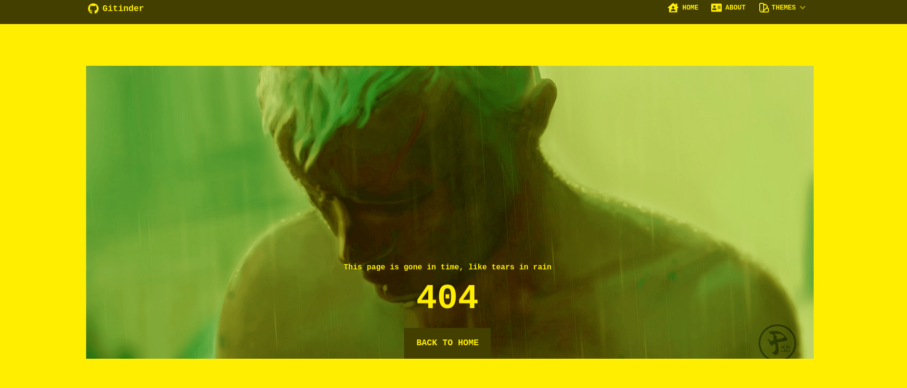

<div>
  <div>
    <div>
      <h1>This page is gone in time, like tears in rain</h1>
         
      <p>404</p>
      <a to="/"> Back to Home </a>
    </div>
     Since I could not figure out how to add my custom made 404 React page, I am
    adding an image of it here.
    
  </div>
</div>
